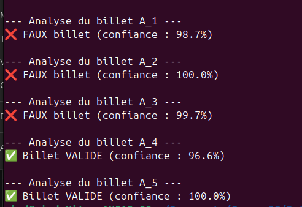

Détectez des faux billets — Classification par Machine Learning

Mission réalisée pour l'ONCFM (Organisation nationale de lutte contre le faux-monnayage), en tant que data analyst senior. L'organisation souhaitait doter ses équipes d'une application de machine learning capable de prédire, à partir des dimensions scannées d'un billet (longueur, hauteur, marges, diagonale), s'il s'agit d'un vrai ou d'un faux billet en euros. La commande était double : un notebook d'analyse et de comparaison de modèles, et une application fonctionnelle livrée en script Python autonome, testée en direct avec la commanditaire.
- Source : 1 500 billets scannés par l'ONCFM (1 000 vrais, 500 faux), avec 6 mesures géométriques par billet (diagonale, hauteurs gauche/droite, marges basse/haute, longueur).
- Qualité : 37 valeurs manquantes sur
margin_low(2,5 % du jeu), supprimées après analyse — la perte ne déséquilibrait pas la répartition vrais/faux (passage de 66,7/33,3 % à 66,4/33,6 %) et aucune variable n'était assez corrélée àmargin_lowpour l'imputer sans risque. - Limite structurelle : aucune variable seule ne sépare vrais et faux billets (chevauchement important sur tous les boxplots) — la distinction n'est possible qu'en croisant plusieurs dimensions, ce qui justifie le recours au machine learning plutôt qu'à un seuil simple.
- Nettoyage des données et détection d'outliers (IQR + Z-score) : nombreux outliers repérés, mais volontairement conservés car potentiellement révélateurs de faux billets plutôt qu'à exclure.
- Test de 4 modèles recommandés par l'agence EMV : K-means, régression logistique, KNN, Random Forest — plus un test bonus avec Gradient Boosting.
- Pour chaque modèle, validation de la robustesse sur 200 échantillons d'entraînement/test différents (et non un seul découpage), afin d'obtenir un score fiable plutôt qu'un résultat de circonstance.
- Optimisation des hyperparamètres du Random Forest par recherche en grille (
GridSearchCV, validation croisée à 5 blocs). - Réduction du modèle final à 3 variables (
margin_low,margin_up,length) après avoir vérifié qu'elles suffisaient à obtenir la même performance que les 6 variables complètes — modèle plus simple, donc plus robuste et plus rapide. - Analyse croisée des erreurs entre les 3 meilleurs modèles pour vérifier s'ils se trompaient sur les mêmes billets.
- Livraison finale : script d'entraînement, modèle sauvegardé (
model_rf.joblib), et deux scripts d'utilisation — l'un pour tester un billet en saisissant ses mesures à la main, l'autre pour tester un fichier entier de billets scannés.
Comparaison des 3 modèles les plus robustes sur 200 échantillons :
| Modèle | ROC-AUC moyen (test) |
|---|---|
| Random Forest | le plus élevé et le plus stable |
| Régression logistique | ~99,9 % |
| KNN (k=3) | ~99,2 % |
Le Random Forest a été retenu comme modèle final mais tous les modèles supervisés testés ont obtenu un score supérieur à 99 % de précision sur les échantillons de test, ce qui est excellent pour un projet de classification binaire. Le modèle final a été réduit à 3 variables seulement, ce qui le rend plus simple et plus rapide à exécuter.
Livrable final : une application en ligne de commande fonctionnelle, testée avec la commanditaire, capable d'analyser soit un billet saisi manuellement, soit un fichier CSV de plusieurs billets, avec un score de confiance associé à chaque prédiction.
- Le jeu de données reste modeste (1 500 billets) pour un modèle destiné à un usage à grande échelle — un enrichissement continu du jeu d'entraînement avec de nouveaux billets scannés en production permettrait de fiabiliser encore le modèle dans le temps.
- Les 3 modèles les plus performants (régression logistique, KNN, Random Forest) se trompent souvent sur les mêmes billets — signe que la difficulté vient de cas limites intrinsèquement ambigus dans les données, pas d'une faiblesse propre à un algorithme. Une piste serait d'examiner spécifiquement ces billets mal classés pour comprendre ce qui les rend atypiques.
- L'application actuelle est en ligne de commande (CLI) — l'évaluateur en soutenance a suggéré d'utiliser Streamlit pour proposer une interface utilisateur web, plus accessible aux équipes terrain qu'un script CLI au quotidien. C'est la prochaine évolution naturelle de l'outil.